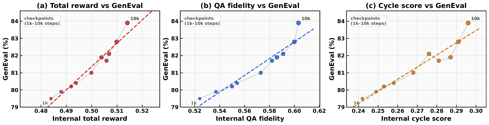

Proposer
Samples candidate visual questions from each unlabeled image, with K=3 proposer candidates per step.
Unified multimodal post-training from unlabeled images
A single self-evolving recipe improves visual understanding and image generation across diffusion, flow-matching, and autoregressive unified backbones using only unlabeled images and self-derived consistency signals.

Most existing unified large multimodal models that jointly perform visual understanding and image generation rely on curated supervision during post-training. We ask whether a unified LMM can autonomously improve both capabilities using only unlabeled images.
The proposed framework builds three internal roles: a Proposer that generates visual questions, a Solver that answers and evaluates them, and a Generator that synthesizes images. Training is driven by self-derived consistency signals, requiring no human annotations, preference labels, or learned external reward model.
Solver Token Entropy provides a continuous difficulty signal when sample-level consistency collapses, while generation-side QA fidelity and cycle-consistent captioning create a solver-mediated coupling between understanding and generation. The same role decomposition, reward logic, and schedule are used across BLIP3o-8B, BAGEL-7B, and VARGPT-v1.1.
The implementation keeps the backbone frozen and trains lightweight role adapters. Only backbone-native chat and generation wrappers change.
Samples candidate visual questions from each unlabeled image, with K=3 proposer candidates per step.
Answers under N=7 prompt framings. Self-consistency and Solver Token Entropy shape the understanding reward.
Synthesizes images and receives internal rewards from QA fidelity, cycle consistency, diversity, and contradiction checks.
The page reports within-backbone improvements. Cross-paper values remain context only because pipelines and evaluation settings differ.
| Backbone | MMMU | MMBench | TextVQA | MME-C |
|---|---|---|---|---|
| BLIP3o-8B | 50.6 -> 52.8 | 83.5 -> 86.1 | 83.1 -> 85.2 | 647.1 -> 660.3 |
| BAGEL-7B | 55.3 -> 58.8 | 85.0 -> 87.1 | 86.0 -> 88.5 | 701.0 -> 715.9 |
| VARGPT-v1.1 | 48.6 -> 51.6 | 81.0 -> 83.7 | 82.0 -> 84.8 | 592.9 -> 606.4 |
| Backbone | GenEval | Largest visible gains |
|---|---|---|
| BLIP3o-8B | 84 -> 87 | Two objects +8, counting +8 |
| BAGEL-7B | 82 -> 85 | Position +3, color attribution +3 |
| VARGPT-v1.1 | 53 -> 56 | Counting +4, two objects +3 |



Evolved checkpoints correct object, action, and spatial understanding errors while improving color, count, and compositional fidelity in generated images.

BibTeX will be added with the public arXiv record and final author metadata.